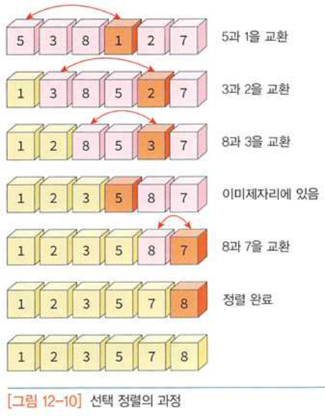
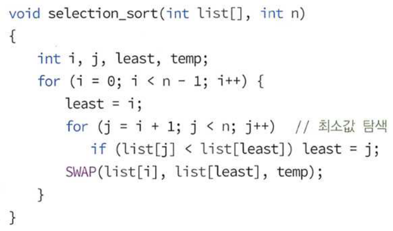
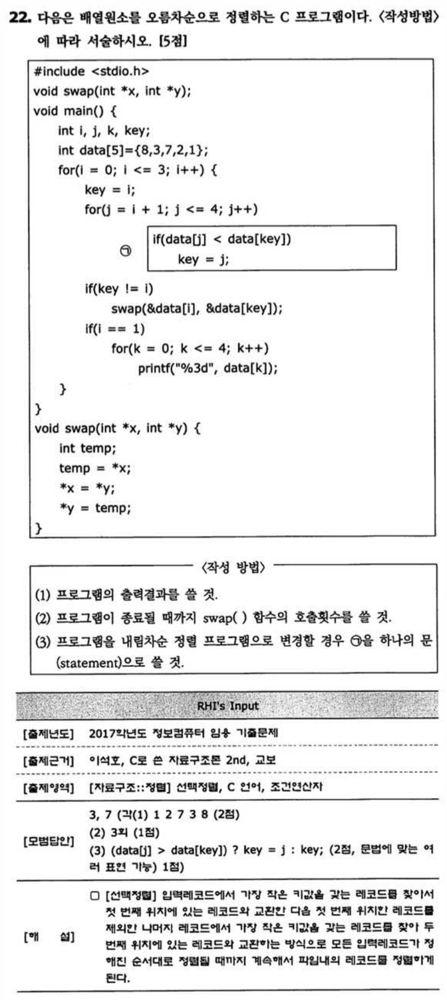
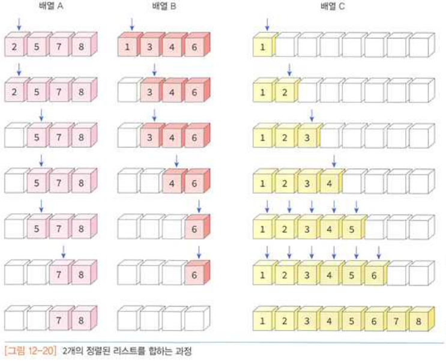
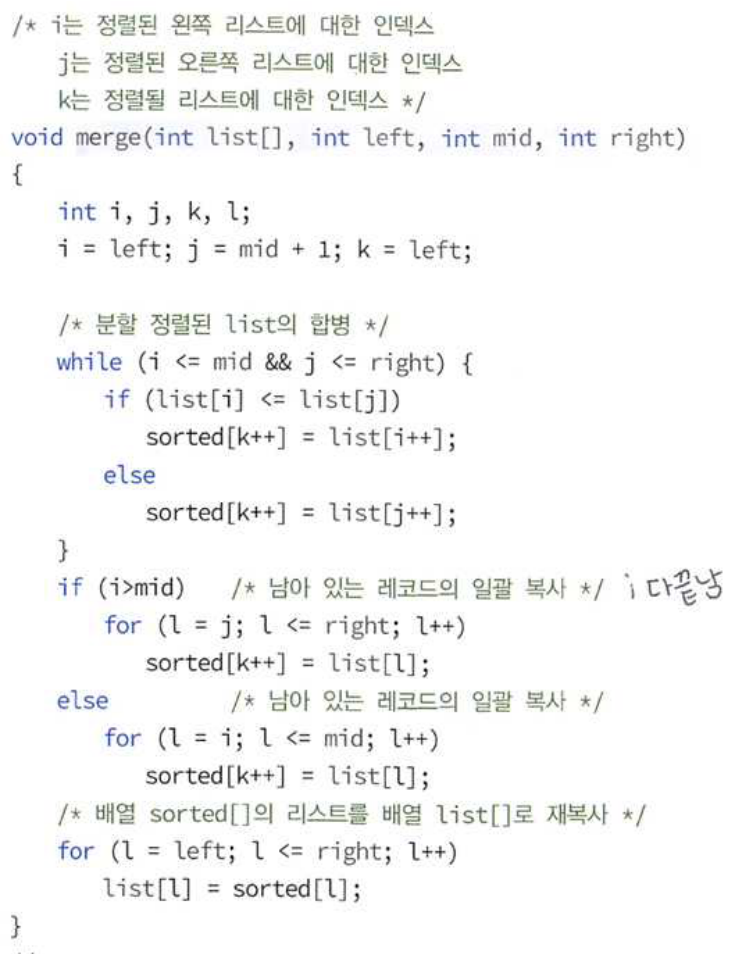
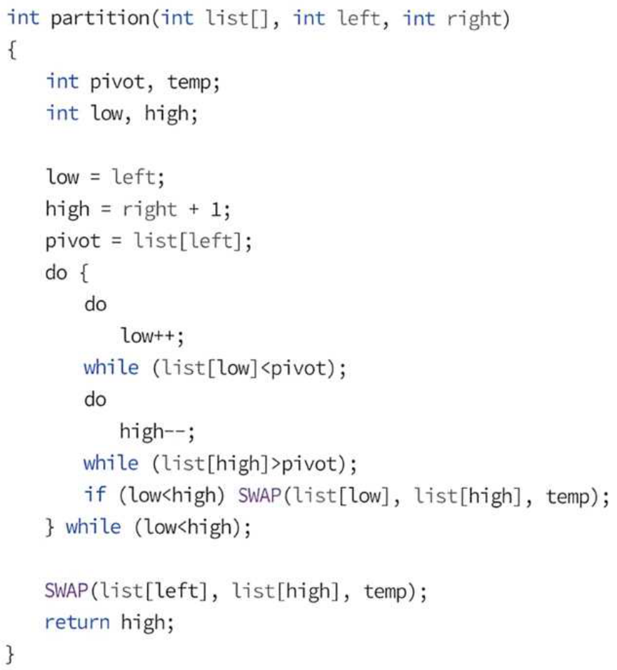
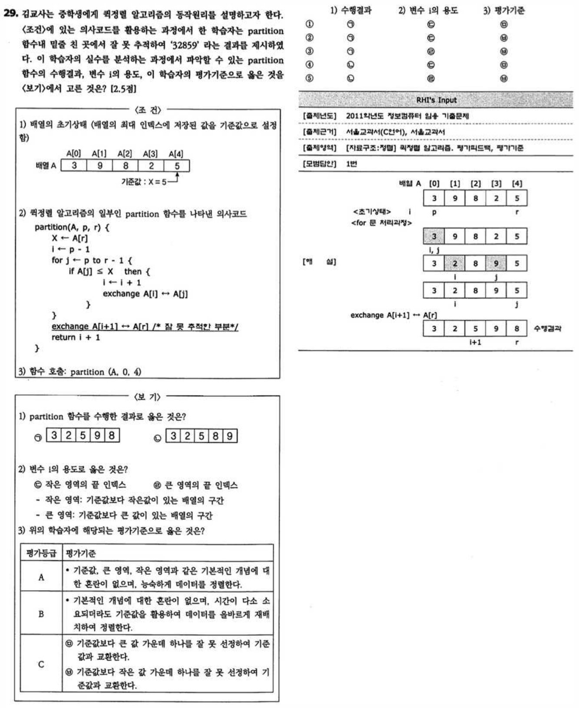
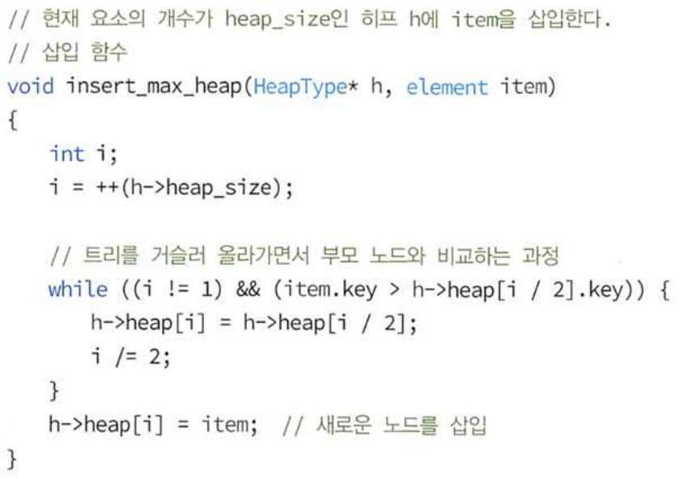

2.3.1
정렬 알고리즘
- 정렬 문제의 정의, 각종 정렬
정렬 알고리즘
- 정렬
- 안정성 : 같은 key값끼리의 위치가 역전되지 않음
- 제자리 정렬 : 입력 n 이외에 다른 추가 메모리 공간 필요 X
| 평균 | 최선 | 최악 | 안정성 | 제자리 정렬 | |
|---|---|---|---|---|---|
| 삽입 정렬 | O(n²) | O(n) | O(n²) | O | N |
| 버블 정렬 | O(n²) | O(n²) | O(n²) | O | N |
| 선택 정렬 | O(n²) | - | - | X | N |
| 합병 정렬 | O(n log n) | - | - | O | N + N |
| 퀵 정렬 | O(n log n) | O(n log n) | O(n²) | X | N (+stack) |
| 힙 정렬 | O(n log n) | - | - | X | N (+pointer) |
| 기수 정렬 | O(dn) | - | - | O | N |
- 삽입 정렬

![void insertion_sort(int list[], int n) 코드: i = 1 부터 key = list[i], j = i-1 부터 list[j] > key 인 동안 list[j+1] = list[j] 로 오른쪽 이동, 마지막에 list[j+1] = key](2-3-1-fig-2.png)
![기출 47번 (2009학년도 정보컴퓨터 임용): 문자열 "peajade" 를 삽입 정렬하는 C 프로그램의 빈칸 ㉮와 j가 4일 때 출력 결과 고르기. 정답 4번 (㉮ item[k+1] = temp, 출력 aaejpde), 해설에 j = 1 ~ 4 단계별 배열 변화 표](2-3-1-fig-3.png)
- 버블 정렬


![#define SWAP(x, y, t) 와 void bubble_sort(int list[], int n) 코드: i = n-1 부터 1 까지, j = 0 부터 i-1 까지 list[j] > list[j+1] 이면 SWAP](2-3-1-fig-6.png)
- 선택 정렬



- 합병 정렬



![void merge_sort(int list[], int left, int right) 코드: left < right 이면 mid = (left + right) / 2 로 균등 분할, 두 부분 리스트를 각각 merge_sort 한 뒤 merge](2-3-1-fig-13.png)

- 퀵 정렬
- Q) 분할이 이루어지면 pivot값은, pivot값보다 더 작은 서브배열과 pivot값보다 더 큰 서브배열, 2개의 서브배열의 중간에 위치하게 된다. 이 pivot값의 위치는 다음 단계가 진행되었을 때 변경이 되는가? 아니면 되지 않는가?
- Sol) pivot값 위치 변경되지 않는다. pivot은 자기 위치를 찾은 것임.
- if pivot이 위치를 움직이게 되면, 왼쪽이 작은 거 / 오른쪽이 큰 거 규칙이 다 무너지기 때문에 pivot값은 한 번 위치를 정하면 끝까지 간다




![기출 14번 (2019학년도 정보컴퓨터 임용): partition(0, 5) 를 List = {7, 1, 9, 5, 3, 8} 에 수행했을 때 반환값과 List[3] 값 쓰기. 모범답안 3, 7 (각 1점), 단계별 배열 변화 풀이](2-3-1-fig-19.png)

- 힙 정렬
- 힙 트리 안에 데이터 삽입 & 삭제하면서 정렬 → 새로운 배열에 옮기면 정렬 완성
- 힙 트리 삽입

- 힙 트리 삭제
![element delete_max_heap(HeapType* h) 코드: item = heap[1], temp = heap[(h->heap_size)--] (가장 작은 값 가진 노드 값이 temp), parent = 1, child = 2 부터 더 큰 자식과 비교해 temp 가 작으면 자식을 위로 올리며 한 단계 아래로 이동, 마지막에 heap[parent] = temp, item 반환](2-3-1-fig-22.png)
![기출 38번 (2010학년도 정보컴퓨터 임용): construct()·heapSort() 로 작성된 힙 정렬 프로그램에 대한 설명으로 옳은 것 고르기 (ary = {0, 20, 15, 6, 28, 12, 10, 9}). 정답 4번 (ㄴ ㄷ ㄹ), 해설: ㄱ은 buf <= ary[k] (최소 힙이기 때문), ㅁ은 내림차순으로 정렬](2-3-1-fig-23.png)
- 기수 정렬
![void radix_sort(int list[], int n) 코드: 큐 BUCKETS 개를 초기화하고, 자릿수 d 마다 (list[i] / factor) % 10 번 버킷 큐에 넣은 뒤 버킷 0 부터 꺼내 list 로 합침, factor *= 10 으로 다음 자리로 이동](2-3-1-fig-24.png)